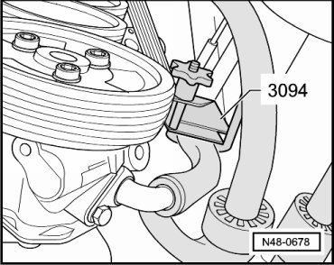
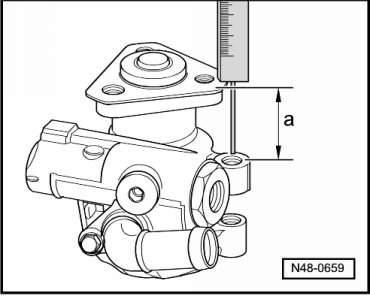
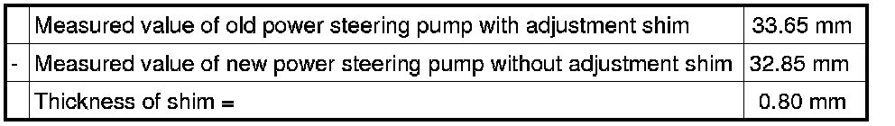
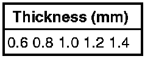
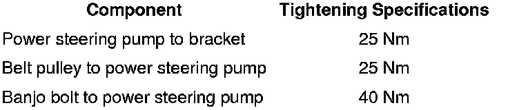

Power Steering Pump
Power Steering Pump
Special tools, testers and auxiliary items required
• Hose clamp (3094)
• Torque wrench (VAG 1331)
• M8 x 50 bolt
Removing
- Remove engine noise insulation.
- Mark ribbed belt running direction
- Thread M8 x 50 bolt into threaded hole of tensioning roller until ribbed belt is free of tension.

- Remove ribbed belt pulley from power steering pump.
- Remove the ribbed belt.
• When removing ribbed belt, observe adjustment shim located underneath. The shim is important for measurement and adjustment of vane pump.
• Do not remove adjustment shim from power steering pump yet.
- Clamp off intake hose using hose clamp (3094).

- Remove banjo bolt.
- Seal pressurized line using a plastic bag or something similar.
- Open spring clip and pull intake hose off power steering pump.
- Remove the power steering pump.
- Measure dimension - a -.

The shim is included in measurement.
- Note measured value.
Installing
Installation is the reverse of removal, with special attention to the following:
- Measure dimension - a - at new power steering pump without adjustment shim.
- Note measured value.
- Determine thickness of adjustment shim.
- Fill hydraulic oil into power steering pump. Fill oil at pump intake connection of power steering pump.
- Turn the hub by hand until oil runs out of the pressure side.
- Install power steering pump.
- Bleed steering system. Refer to --> [ Power Steering System Bleeding ] Power Steering System Bleeding.
- Check hydraulic fluid level.
- Check steering system for leaks. Refer to --> [ Power Steering System Bleeding ] Power Steering System Bleeding.
Adjustment Shim Thickness, Determining
- Determine thickness of adjustment shim using measured values.
Example

The following shims are available:

Allocation of adjustment shims.
- Install power steering pump.
Tightening Specifications
